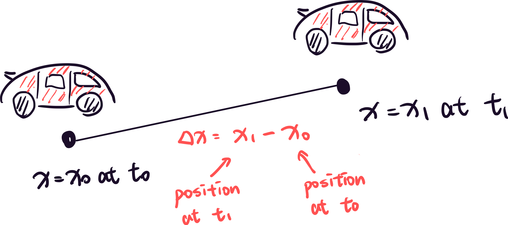

Motion Along a Straight Line: Position and Velocity
What Is Motion?
Motion is used to describe the change of position or rotation of an object over time. For example, if an object falls down, it's a kind of motion.
First, we will talk about the motion of an object along a straight line (or 1-dimensional motion). We will discuss how to describe the motion in terms of position, velocity, and acceleration.
Position and Displacement
Position
The position of an object is the distance from the origin of the coordinate system (you can choose any origin you want).
Displacement
If an object moves from point A to point B, the distance between A and B is called the displacement.
If an object is at t_0 at position x_0 and at t_1 at position x_1, we can say that the displacement \Delta x between t_0 and t_1 is x_1 - x_0.

\Delta x = x_1 - x_0
(1)
Average Velocity
Velocity
The velocity describes how fast an object is moving. If the velocity is 0, it means that the object is not moving. In physics, we usually use the symbol v to describe the velocity.
Average Velocity
The average velocity describes how fast an object moves from its initial position to its final position over a time period. The average velocity is independent of the path of the object (or we can say the average velocity is not relative to the path of the object). If an object has a displacement of \Delta x during a time period of \Delta t, the average velocity v_{avg} is \Delta x / \Delta t.
v_{avg} = \frac{\Delta x}{\Delta t}
(2)
The average velocity being 0 does not mean that the object is not moving. It could be that the object is moving along a path and finally returns to the starting point or that the object is not moving.
Average Speed
The definition of average speed is quite similar to the definition of average velocity. It has only one difference: the average speed is relative to the path of the object.
We can write the average speed s_{avg} as \frac{total \ distance} {\Delta t }.
Position-Time (x-t) Graph
Position-Time (x-t) graph is used to show the position of an object over time.
Sample Problem #1
There are 2 towns near A City. B Town is 15 km west of A City and C Town is 20 km south of B Town. Assume a person takes 5 hr to walk from A City to B Town and 7 hr to walk from B Town to C Town.
(a) What is the average speed of this person from A City to C Town?
(b) What is the average velocity of this person from B Town to C Town?
Solutions
Sample Problem #1
(a)
The total distance = 35 \ \rm{km}, \Delta t = 12\ \rm{hr}
\Rightarrow s_{avg} = \frac{35 }{12} (\rm{km/hr})
(b)
\Delta x = \sqrt{20^2+15^2} = 25 \ \rm{km}, \Delta t = 12\ \rm{hr}
\Rightarrow v_{avg} = \frac{25 }{12} (\rm{km/hr})
Exercise #1 [Halliday 2.5]
(a) 0; (b) -2 m; (c) 0; (d) 12 m; (e) +12 m; (f) +7 m/s
Exercise #2 [Halliday 2.7]
60 km
Exercise #3 [Halliday 2.11]
128 km/h